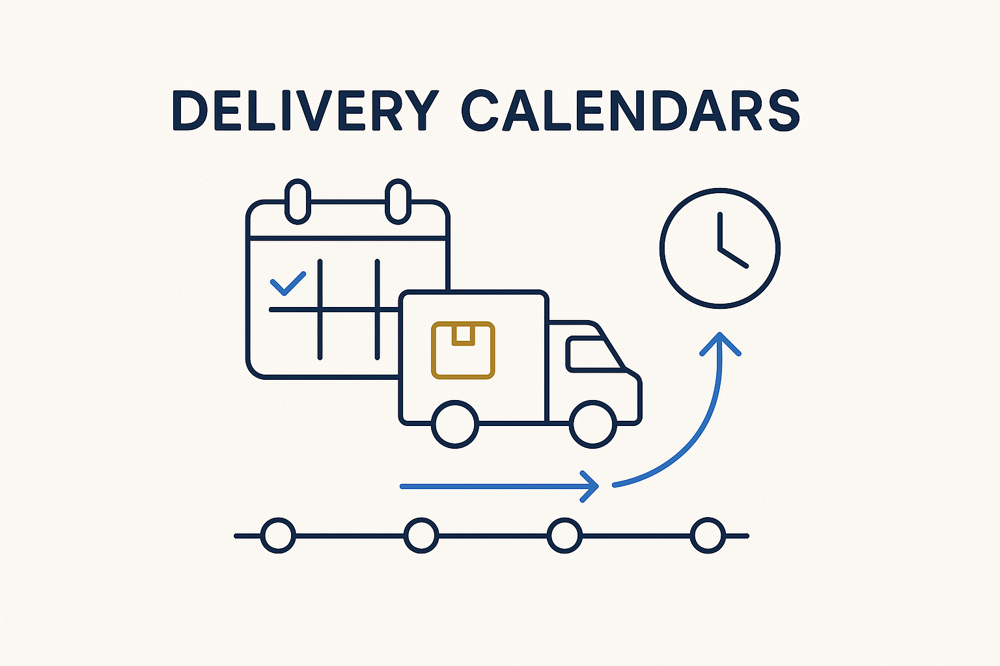

Model the time rhythm of deliveries — when each is due, how often — so 'the delivery is late' becomes a query the system answers on its own.

> Model the time rhythm of deliveries — when each is due, how often — so 'the delivery is late' becomes a query the system answers on its own.
A delivery calendar models the time rhythm of the data flowing between systems: this feed is daily by 06:00, that one is monthly on the third working day, this other one is event-driven with a maximum gap. Once the expected timing is data rather than tribal knowledge, lateness stops being something a human notices by accident. “Which deliveries are overdue right now?” becomes a query, and an alert can fire the moment a window closes without the data arriving.
This is what turns timing from a source of quiet failures into a monitored guarantee. Without a calendar, a feed that silently stops is discovered when a downstream number looks wrong; with a calendar, the absence itself is the signal, caught at the boundary and attributed to the right system. It is the temporal half of a contract: the contract says *what* and *how good*, the calendar says *when*.
Calendars pair with deliveries and incident modeling: the calendar sets the expectation, the delivery is the event, and a missed window becomes a tracked incident with an owner. Modeled as metadata, delivery timing is one more thing you can ask the platform about instead of hoping someone is watching.
Where it lives: the delivery layer of Breakthrough Modeling — when data is due, as data.